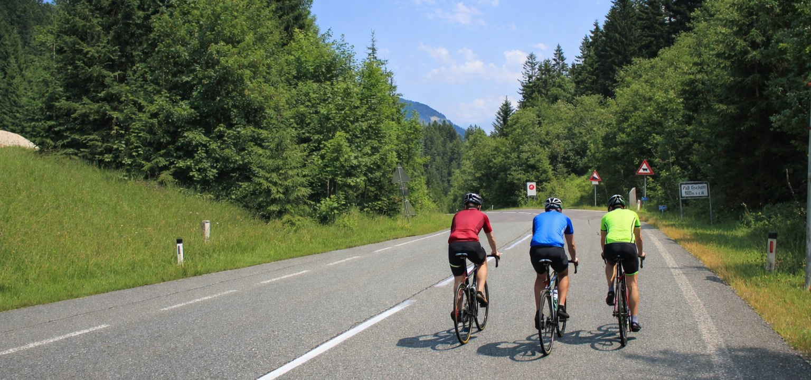

DAY03 – Königssee → Hallstatt
A mérés automatikusan indul oldalnyitáskor, majd 5 mp múlva frissít.
A távolságok minden célpontnál frissülnek, és az oldal a legvalószínűbb következő pontra ugrik.
1. Kehlsteinhaus (A Sasfészek) – Obersalzberg parkoló
47.630588, 13.041697
mérés:
várakozás
távolság: —
A nácik egykori reprezentációs teaháza 1834 méteren. Obersalzbergnél ér véget a közúti szakasz, innen busz és lift visz fel a csúcsra.

2. Pass Gschütt (Gschütt-hágó)
47.590123, 13.432658
mérés:
várakozás
távolság: —
957 méter magas hágó a B166-os úton, Salzburg (Tennengau) és a Salzkammergut között.

3. Gosau-völgy (A Dachstein előszobája)
47.584321, 13.535874
mérés:
várakozás
távolság: —
Széles, jégkorszaki eredetű völgy a Dachstein tömbjének előterében, alpesi legelőkkel és hegyi panorámával.

4. Hallstatt (A Világörökség szíve)
47.553085, 13.647849
mérés:
várakozás
távolság: —
A hegyoldal és a tó közé szorult, teraszos település, 7000 éves sóbányászati múlttal és világörökségi jelentőséggel.

5. Camping Klausner-Höll (Berchtesgaden)
47.63090, 13.00085
mérés:
várakozás
távolság: —
Kisebb, családias kemping Berchtesgadenben, a Königssee és a Watzmann között. Október 1–15. között korlátozott üzemmódban fogad lakókocsit és lakóautót, zuhany és WC nélkül, de árammal, camperservice-szel és WIFI-vel.

Térkép